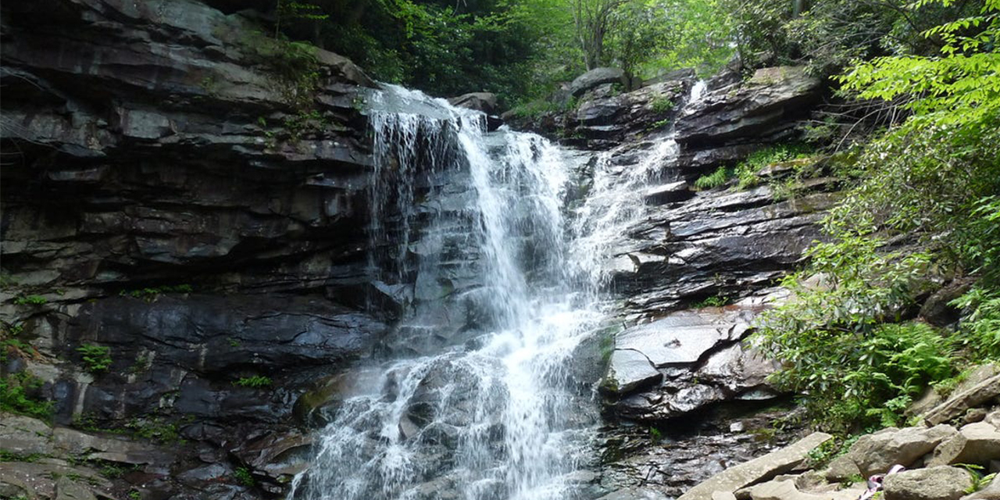
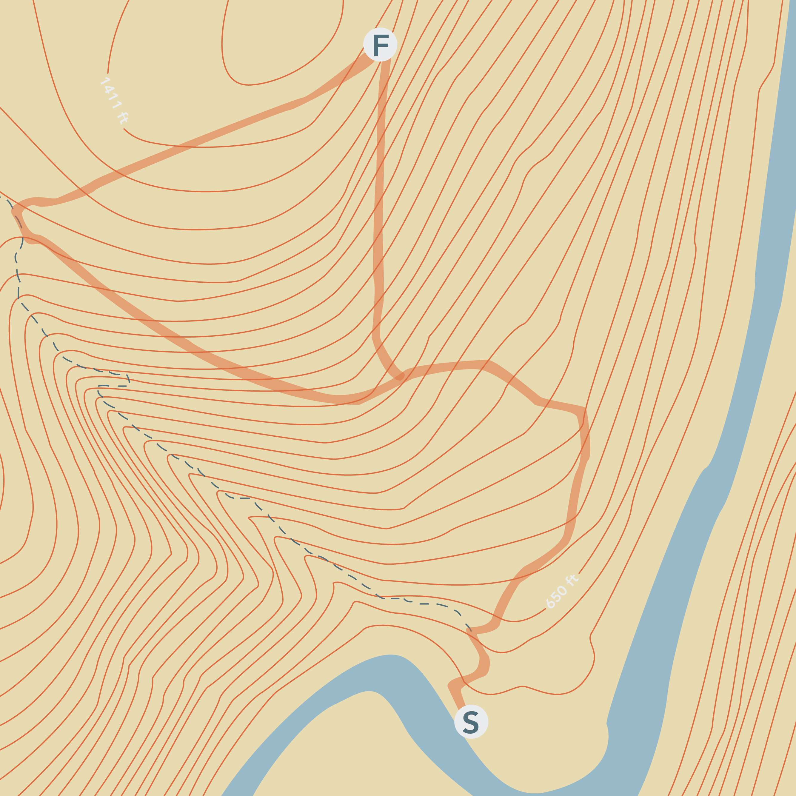
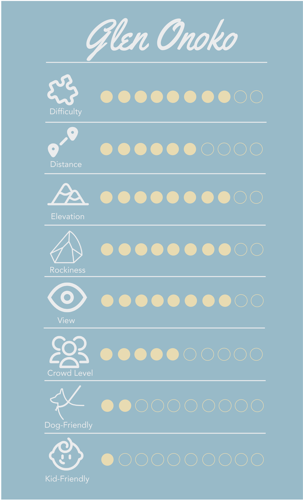
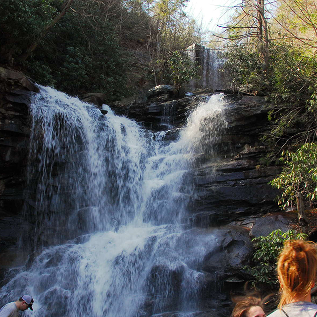
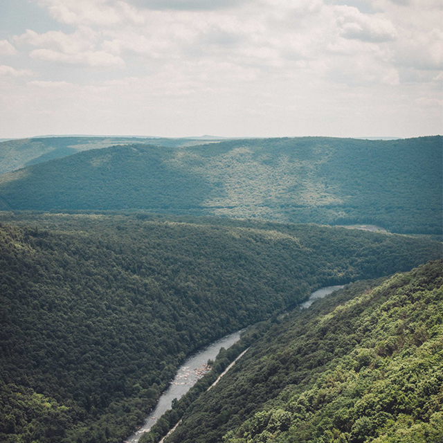
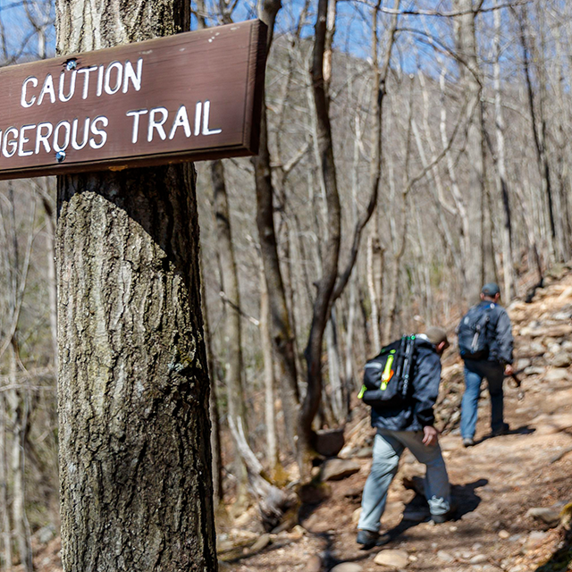

This hike is perfect for a hot summer day.




SHUT THE DOOR.
GO OUTSIDE.
Hidden in the Lehigh Gorge State Park, you will find one of the most popular, yet challenging trails in Pennsylvania. Glen Onoko Falls is a 1.8 mile loop trail that will make you sweat over the course of 1.5-2 hours. At the end of the extremely steep climb is the Glen Onoko Waterfall, which offers beautiful views and a great photo opportunity. On this trail, expect to climb an elevation of 863 feet before reaching the main falls. On the way up, hikers will be able to visit the three different sections of the falls; lower, middle, and upper. On the way back down, the trail is more easily manageable with less loose rock. This is the perfect scramble for more experienced hikers, due to the lack of markings and large amount of loose rock. This trail is not kept up as much by rangers, so it provides a more “natural” feel for those attempting the trek. Be sure to bring your favorite pair of hiking shoes with good traction for this climb, as regular gym sneakers won’t provide you with the grip needed. Trekking poles are useful on this trail due to the wet ground and slippery leaves near the falls.
Glen Onoko Falls is nestled in the Lehigh Gorge State Park, which can be found near Jim Thorpe, PA. Jim Thorpe is about an hour northwest from Allentown, or about 2 hours from Philadelphia. The main address for the trail is 259 Main St, Jim Thorpe, PA 18229. From the parking lot, cross the wooden bridge, proceed down the stairs and walk under the bridges. After the bridges, you will come upon a sign that marks the start of the trail. Make a left at the sign, and be sure to follow the orange trailmarks. If you’re looking for a nice reward after your hike, be sure to stop by any of the restaurants on Main Street in Jim Thorpe!


The trail's lookout point might rival the views of the falls!

Use caution on this trail!